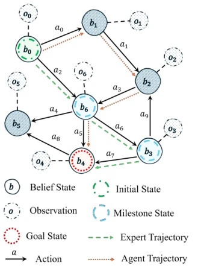
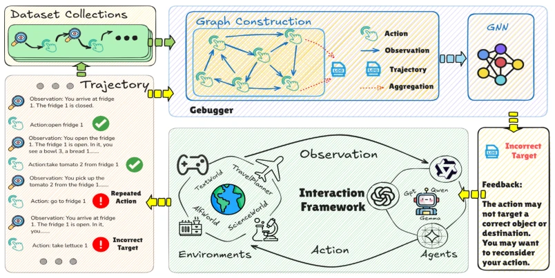
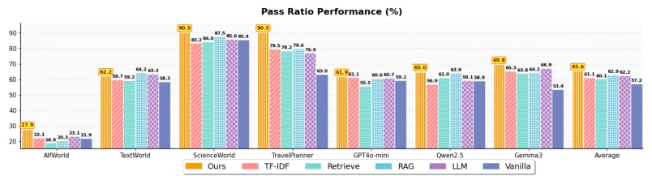

This paper equips LLM Agents with a "pre-mortem examiner", attempting to catch errors using Graph Neural Networks before action execution. The idea is quite sexy, converting trajectories into graphs and using GNN for node classification is indeed slightly better than pure text classification. But do not get too excited, this thing is essentially "supervised retrieval enhancement", the core still relies on the quality of historical trajectory data. If the environment is too new and there are no samples in the graph, this "Debugger" is just a decoration. Moreover, the theoretical part boasts lower Bayes Risk, but in high-dimensional language space, can graph structures really capture POMDP hidden states? It is somewhat doubtful. Experimental results look good, average improvement 14.69%, but this is based on four specific benchmarks, generalization remains to be seen. Overall, it is a nice engineering improvement, but do not expect it to solve the fundamental hallucination problem of long-horizon planning, after all it is just a sandbox, not directly modifying model weights, belonging to icing on the cake rather than sending charcoal in snow.
LLM Agents often fail in long-horizon tasks due to cumulative errors, existing strategies mostly rely on post-hoc learning, such as environment exploration [60, 63, 42] or fine-tuning [64, 75, 49]. These methods are mainly based on final trajectory results, making it difficult to locate the cause of errors in specific steps, leading to sparse and lagging feedback signals. For example, although AgentBoard [5] decomposes subgoals, it lacks fine-grained diagnosis. Software debugging ideas are introduced, but directly applying text classification or retrieval (such as RAG [20]) ignores the sequence dependency structure of trajectories. This paper aims to shift from "post-hoc analysis" to "pre-diagnosis", solving the problem of entire trajectory collapse caused by single-step suboptimal actions, avoiding costly fine-tuning costs. By introducing graph structures, it attempts to capture latent dependencies between actions, providing finer-grained causal feedback.

Figure 1: A conceptual diagram of a POMDP illustrating our error diagnosis task. An expert follows an optimal tra- jectory from the Initial State (b0) to the Goal State (b4) by progressing through Milestone States (b6, b3). In contrast, the agent’s trajectory is suboptimal.
The overall framework is Trajectory Graph Copilot. First, text trajectories are converted into PGM-based graphs, nodes are actions, edges are observations, forming action-centric graphs. Second, GNN (TextGCN [69]) is utilized for node classification, transforming error detection into a node classification task on the graph, minimizing cross-entropy loss during training. Finally, diagnostic feedback is injected into the Agent's Prompt via ICL, rather than fine-tuning the model. Innovations lie in: 1. Modeling POMDP trajectories as probabilistic graphs, capturing dependencies between actions and observations, superior to traditional sequence models; 2. Providing warnings only as a diagnostic sandbox, preserving Agent reasoning autonomy, reducing fine-tuning bias; 3. Theoretical proof that graph methods have lower sample complexity under the same generalization error. Additionally, this method aggregates neighbor information through a message passing mechanism, updates node representations, and finally outputs error probability through Softmax.

Figure 2: Overall pipeline of Trajectory Graph Copilot. We first collect the trajectories. We then use the Graph Debugger to predict the action error labels, which includes converting trajectories into a PGM-based graph and utilizing the GNN-based detector. Finally, our framework provides external information for agent decision-making.
On four benchmarks such as AlfWorld, TextWorld, using three models such as GPT4o, Qwen2.5. Baselines include text classification (TF-IDF, Bert), retrieval (MiniLM, GTR), RAG, and LLM-as-judge. Metrics are Accuracy, Pass Ratio (PR). Results show Graph Debugger accuracy is better than text classification by over 5%, PR average improvement 14.69%. Ablation experiments show directed graphs are better than undirected graphs, Bert embeddings are better than One-hot. Feedback integrated into User Prompt works best. Statistical significance analysis confirms the robustness of the method. Additionally, in TravelPlanner, RAG performance reversed, indicating long sequences may dilute RAG advantages.

Figure 3: The pass ratio (%) results across four benchmarks and three LLM agents. Ours consistently outperforms other baselines.